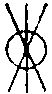

卍新纂大日本續藏經 第70冊
No.1401 高峰原妙禪師禪要 (1卷)
【(侍者)持正錄 (參學)洪喬祖編】
第 1 卷
No. 1401-A
參禪雖以不立文字不假修證為宗。然既可參則必有要。要者何。如網之有綱。衣之有領。使人一舉而徑得其直遂者是也。萬目非不網也。捨綱舉目。網必不張。萬縷非不衣也。遺領舉縷。衣必不振。永嘉云。摘葉尋枝我不能。枝與葉非要。根本固要也。學者復昧其根本。鵝湖云。要在當人能擇上擇善而從可也。學者往往。差決擇於發軔。終適越而北轅。乃至從上祖師遺編山積。一話一言。固無非綱領。柰何世降聖遠。情偽日滋。心意識有以蠱蝕之。則視綱領為目縷者。蓋摠摠矣。我。
師高峰和尚。自雙峰而西峯。二十餘年。念此之故。不獲已。示人剋的。如神藥刀圭而起死。靈符點畫而驅邪。故有探其奇方秘呪。將以為學徒綱領者。或曰。獲禽在目不在綱。禦寒在縷不在領。八萬四千法門。門門可入。目與縷。果非要耶。將應之曰。世尊法門。信廣大無邊。顧乃設為方便狹小一門。使諸子出火宅而入大乘。是攝目縷為綱領耳。然則綱耶目耶。領耶縷耶。要耶非要耶。未具頂門正眼。未可以易言也。喬祖預西峰法席以來。每抄集示徒法語之切於參決者。名之曰禪要。久欲與有志者共之。一日舉似姑蘇永中上人。欣然欲募緣鋟梓。且俾喬祖為之序。喬祖既已承命。復告之曰。師別有一要語。在綱領外。藏之虗空骨中。兄欲鋟我欲序皆不能。尚俟他日更作一番揭露。
至元甲午重九日天目參學直翁洪喬祖謹書。
No. 1401-B
古靈以閱經為鑽故紙。輪扁以讀書為味糟粕。良以道不可以言語文字求也。然道無方體無形似。非言語文字。何從而明之。是以吾 佛世尊。雖隨機化誘。曲成密庸。而不能不談十二部法。達磨西來。雖不立文字。而授受之際。口傳面命。亦不能以忘言。蓋道雖不在於言語文字。實不離於言語文字。特精微之旨。具於辭說之表。未易窺覩。世之學者。往往沈著於語下。不能體會其精微。徒觀標月之指。不覿當天之月。遂以言語文字為礙。致俾古靈輪扁。激而為故紙糟粕之譏。然言語文字。正所以發明心華。模寫道妙。初何嘗礙道哉。
高峰和尚。說法如雲如雨。直翁洪君。撮其奇秘。名曰禪要。永中上人。從而鋟梓。以廣其傳。舉網而得綱。挈裘而振領。將俾學者。因法語之要。以會道體之全。其開牗後學之心。可謂篤矣。學者於此果能優游以求之。厭沃以趨之。渙然永釋。怡然理順。則工夫次第。進趣操略。
老師已和盤托出。悉在此書矣。特患學者未能猛烈承當耳。吁扁鵲方中。具有靈藥。或名神丹。或名無憂散。回生起死。功在剎那。具眼目。著精神。盡心力。汲汲而求之。未有不得者。
老師之言。豈欺汝也。學者慎無錯認古靈輪扁之言。而忘 老師諄諄之誨。庶幾直翁永中功不虗施。亦使觀語錄而得發明者。不專美於前矣。
至元甲午十月哉生魄。
參學清苕淨明朱頴遠謹跋
No. 1401
高峰和尚禪要
開堂普說
僧問。十方同聚會。箇箇學無為。此是選佛場。心空及第歸。龐居士恁麼道。還有為人處也無。師云有。進云。畢竟在那一句。師云。從頭將問來。進云。如何是十方同聚會。師云。龍蛇混雜。凡聖交參。進云。如何是箇箇學無為。師云。口吞佛祖。眼蓋乾坤。進云。如何是選佛場。師云。東西十萬。南北八千。進云。如何是心空及第歸。師云。動容揚古路。不墮悄然機。進云。恁麼則言言見諦。句句朝宗。師云。你甚處見得。僧喝。師云。也是掉棒打月。進云。此事且止。只如西峰今日。十方聚會。選佛場開。畢竟有何祥瑞。師云。山河大地。萬象森羅。情與無情。悉皆成佛。進云。既皆成佛。因甚學人不成佛。師云。你若成佛。爭教大地成佛。進云。畢竟學人過在甚麼處。師云。湘之南潭之北。進云。還許學人懺悔也無。師云。禮拜著。僧纔拜。師云。獅子咬人。韓獹逐塊。師乃豎拂。召大眾云。此是選佛場。心空及第歸。怜悧漢。若向者裏見得。便見龐居士安身立命處。既見龐居士安身立命處。便見從上佛祖安身立命處。既見佛祖安身立命處。便見自己安身立命處。既見自己安身立命處。不妨向者裏拗折拄杖。高掛鉢囊。三條椽下。七尺單前。咬無米飯。飲不濕羮。伸脚打眠。逍遙度日。若是奴郎不辨。菽麥不分。抑不得已。按下雲頭。向虗空裏。書一本上大人。教諸人依[打-丁+羕]畫猫兒去也。山僧昔年在雙徑歸堂。未及一月。忽於睡中。疑著萬法歸一。一歸何處。自此疑情頓發。廢寢忘餐。東西不辨。晝夜不分。開單展鉢。屙屎放尿。至於一動一靜。一語一默。總只是箇一歸何處。更無絲毫異念。亦要起絲毫異念。了不可得。正如釘釘膠粘。撼搖不動。雖在稠人廣眾中。如無一人相似。從朝至暮。從暮至朝。澄澄湛湛。卓卓巍巍。純清絕點。一念萬年。境寂人忘。如癡如兀。不覺至第六日。隨眾在三塔諷經次。擡頭忽覩五祖演和尚真。驀然觸發日前仰山老和尚問拖死屍句子。直得虗空粉碎。大地平沈。物我俱忘。如鏡照鏡。百丈野狐。狗子佛性。青州布衫。女子出定話。從頭密舉。驗之無不了了。般若妙用。信不誣矣。前所看無字。將及三載。除二時粥飯。不曾上蒲團。困時亦不倚靠。雖則晝夜東行西行。常與昏散二魔。輥作一團。做盡伎倆。打屏不去。於者無字上。竟不曾有一餉間省力。成片自決之後。鞠其病源。別無他故。只為不在疑情上做工夫。一味只是舉。舉時即有。不舉便無。設要起疑。亦無下手處。設使下得手疑得去。只頃刻間。又未免被昏散打作兩橛。於是空費許多光陰。空喫許多生受。略無些子進趣。一歸何處。却與無字不同。且是疑情易發。一舉便有。不待返覆思惟計較作意。纔有疑情。稍稍成片。便無能為之心。既無能為之心。所思即忘。致使萬緣不息而自息。六窓不靜而自靜。不犯纖塵。頓入無心三昧。忽遇喫粥喫飯處。管取向鉢盂邊摸著匙筯。不怕甕中走却鼈。此是已驗之方。決不相賺。如有一句誑惑諸人。自招永墮拔舌犂耕。現前學般若菩薩。必要明此一段大事。不憚山高水闊。得得來見西峰。況兼各各然指然香。立戒立願。礪齒磨牙。辦鐵石志。既有如是操略。如是知見。切須莫負自己初心。莫負父母捨汝出家心。莫負新建僧堂檀信心。莫負國王大臣外護心。直下具大信去。直下無變異去。直下壁立萬仞去。直下依[打-丁+羕]畫猫兒去。畫來畫去。畫到結角羅紋處。心識路絕處。人法俱忘處。筆端下驀然突出箇活猫兒來。[囗@力]。元來盡大地是箇選佛場。盡大地是箇自己。到者裏說甚龐居士。直饒三乘十地膽喪魂驚。碧眼黃頭容身無地。然雖如是。若要開鑿人天眼目。發揚佛祖宗猷。更須將自己與選佛場。鎔作一團。颺在百千萬億世界之外。轉身移步。向威音那邊更那邊打一遭。却來喫西峰痛棒。大眾。既是和自己颺了。又將甚麼喫棒。忽有箇不顧性命底漢子。聞恁麼舉。出來掀倒禪床。喝散大眾。是則固是。要且西峰師子巖未肯點頭在。
示眾
三世諸佛。歷代祖師。留下一言半句。惟務眾生超越三界。斷生死流。故云。為一大事因緣。出現於世。若論此一大事。如馬前相撲。又如電光影裏穿針相似。無你思量解會處。無你計較分別處。所以道。此法非思量分別之所能解。是故世尊。於靈山會上。臨末梢頭。將三百六十骨節。八萬四千毛竅。盡底掀翻。雖有百萬眾圍繞。承當者惟迦葉一人而已。信知此事決非草草。若要的實明證。須開特達懷。發丈夫志。將從前惡知惡解。奇言妙句。禪道佛法。盡平生眼裏所見底。耳裏所聞底。莫顧危亡得失。人我是非。到與不到。徹與不徹。發大忿怒。奮金剛利刃。如斬一握絲。一斬一切斷。一斷之後。更不相續。直得胷次中。空勞勞地。虗豁豁地。蕩蕩然。無絲毫許滯礙。更無一法可當情。與初生無異。喫茶不知茶。喫飯不知飯。行不知行。坐不知坐。情識頓淨。計較都忘。恰如箇有氣底死人相似。又如泥塑木雕底相似。到者裏。驀然脚蹉手跌。心華頓發。洞照十方。如杲日麗天。又如明鏡當臺。不越一念。頓成正覺。非惟明此一大事。從上若佛若祖。一切差別因緣。悉皆透頂透底。佛法世法。打成一片。騰騰任運。任運騰騰。灑灑落落。乾乾淨淨。做一箇無為無事出格真道人也。恁麼出世一番。方曰不負平生參學之志願耳。若是此念輕微。志不猛利。[毯-炎+畏][毯-炎+畏][毯-炎+崔][毯-炎+崔]。魍魍魎魎。今日也恁麼。明日也恁麼。設使三十年二十年用工。一如水浸石頭相似。看看逗到臘月三十日。十箇有五雙。懡[怡-台+羅]而去。致令晚學初機不生敬慕。似者般底漢。到高峰門下。打殺萬萬千千。有甚麼罪過。今日我之一眾。莫不皆是俊鷹快鷂。如龍若虎。舉一明三。目機銖兩。豈肯作者般體態。兀兀度時。然雖如是。正恁麼時。畢竟喚甚麼作一大事。若也道得。與汝三十拄杖。若道不得。亦與三十拄杖。何故。(卓主丈一下云)高峰門下賞罰分明予假此來二十四年。常在病中。求醫服藥。歷盡萬般艱苦。爭知病在膏肓。無藥可療。後至雙徑。夢中服斷橋和尚所授之丹。至第六日。不期觸發仰山老和尚所中之毒。直得魂飛膽喪。絕後再甦。當時便覺四大輕安。如放下百二十斤一條檐子相似。今將此丹。普施大眾。汝等服之。先將六情六識。四大五蘊。山河大地。萬象森羅。總鎔作一箇疑團。頓在目前。不假一鎗一旗。靜悄悄地。便似箇清平世界。如是行也只是箇疑團。坐也只是箇疑團。著衣喫飯也只是箇疑團。屙屎放尿也只是箇疑團。以至見聞覺知。總只是箇疑團。疑來疑去。疑至省力處。便是得力處。不疑自疑。不舉自舉。從朝至暮。粘頭綴尾。打成一片。無絲毫縫罅。撼亦不動。趂亦不去。昭昭靈靈。常現在前。如順水流舟。全不犯手。只此便是得力底時節也。更須慤其正念。慎無二心。展轉磨光。展轉淘汰。窮玄盡奧。至極至微。向一毫頭上安身。孤孤迥迥。卓卓巍巍。不動不搖。無來無去。一念不生。前後際斷。從茲塵勞頓息。昏散勦除。行亦不知行。坐亦不知坐。寒亦不知寒。熱亦不知熱。喫茶不知茶。喫飯不知飯。終日獃憃憃地。恰似箇泥塑木雕底。故謂墻壁無殊。纔有者境界現前。即是到家之消息也。決定去地不遠也。巴得搆也。撮得著也。只待時刻而已。又却不得見恁麼說。起一念精進心求之。又却不得將心待之。又却不得要一念縱之。又却不得要一念棄之。直須堅凝正念。以悟為則。當此之際。有八萬四千魔軍。在汝六根門頭伺候。所有一切奇異殊勝。善惡應驗之事。隨汝心設。隨汝心生。隨汝心求。隨汝心現。凡有所欲。無不遂之。汝若瞥起毫釐差別心。擬生纖塵妄想念。即便墮他圈樻。即便被他作主。即便聽他指揮。便乃口說魔話。心行魔行。反誹他非。自譽真道。般若正因。從茲永泯。菩提種子。不復生芽。劫劫生生。常為伴侶。當知此諸魔境。皆從自心所起。自心所生。心若不起。爭如之何。天台云。汝之伎倆有盡。我之不采無窮。誠哉是言也。但只要一切處放教冷冰冰地去。平妥妥地去。純清絕點去。一念萬年去。如箇守屍鬼子。守來守去。疑團子欻然爆地一聲。管取驚天動地。勉之勉之。
示直翁居士(洪新恩)
終日共談不二。未嘗舉著一字。復問此意如何。不免遞相鈍置。父母非我親。誰是最親者。盲龜跛鼈。靈利漢向者裏薦得。便見無邊剎境自他不隔於毫端。十世古今始終不離於當念。其或未然。不妨撇轉機輪。便就盲龜跛鼈上。著些精彩。起箇疑情。疑來疑去。直教內外打成一片。終日無絲毫滲漏。鯁鯁于懷。如中毒藥相似。又若金剛圈栗棘蓬。決定要吞。決定要透。但盡平生伎倆憤將去。自然有箇悟處。假使今生吞透不下。眼光落地之時。縱在諸惡趣中。不驚不怖。無拘無絆。設遇閻家老子。諸大鬼王。亦皆拱手。何故。蓋為有此般若不思議之威力也。然則有諸現業。畢竟般若力勝。如箇金剛幢子。鑽之不入。撼之不動。世人出於豪勢門墻。亦復如是。一切官屬吏卒。無不畏之。又若擲地墮地。重處先著目。即雖有成住壞空之相。如龍脫殻。如客旅居。其實本主。無生無滅。無去無來。無增無減。無老無少。自無始劫來。至於今生。頭出頭沒。千變萬化。未嘗移易絲毫許。堪嗟一等學人。往往多認者箇識神。不救正悟。不脫生死。置之莫論。今生既下此般若種子。纔出頭來。管取福慧兩全。超今越古。裴相國。李駙馬。韓文公。白樂天。蘇東坡。張無盡。即此之類也。雖沈迷欲境。亦不曾用工。纔參見善知識。一言之下。頓悟上乘。超越生死。雖在塵中。遊戲三昧。不忘佛囑。外護吾門。咸載祖燈。續佛慧命。此輩若不是宿世栽培。焉得便恁麼開花結子。福足慧足。是則固是。今日山僧却有箇煅凡成聖底藥頭。不假[栽-木+土]培底種子。說則辭繁。略舉一偈。欲明種子因。熟讀上大人。若到可知禮。盲龜跛鼈親。
結制示眾
大限九旬。小限七日。麤中有細。細中有密。密密無間。纖塵不立。正恁麼時。銀山鐵壁。進則無門。退之則失。如墮萬丈深坑。四面懸崖荊棘。切須猛烈英雄。直要翻身跳出。若還一念遲疑。佛亦救你不得。此是最上玄門。普請大家著力。山僧雖則不管。閑非越例。與諸人通箇消息。[○@…][○@(：/．)][○@∴]。
示眾
皮穿肉爛。筋斷骨折。具無礙辯。橫說豎說。若謂向上一關。敢保老兄未徹。直須虗空粉碎。大海枯竭。透頂透底。內外澄澈。正恁麼時。猶是眼中著屑。大眾且道。如何是到家底句。泥牛喫鐵棒。金剛迸出血。
若論此事。如大火聚。烈燄亘天。曾無少間。世間所有之物。悉皆投至。猶如片雪點著便消。爭容毫末。若能恁麼提持。剋日之功。萬不失一。儻不然者。縱經塵劫。徒受勞矣。
海底泥牛銜月走。巖前石虎抱兒眠。鐵蛇鑽入金剛眼。崐崙騎象鷺鷥牽。此四句內。有一句能殺能活能縱能奪。若檢點得出。許汝一生參學事畢。
若論此事。譬如人家屋簷頭一堆榼[打-丁+(天/韭)]相似。從朝至暮。雨打風吹。直是無人覰著。殊不知有一所無盡寶藏。蘊在其中。若也拾得。百劫千生。取之無盡。用之無竭。須知此藏不從外來。皆從你諸人一箇信字上發生。若信得及。決不相誤。若信不及。縱經塵劫。亦無是處。普請諸人。便恁麼信去。免教做箇貧窮乞兒。且道此藏即今在甚處。(良久云)不入虎穴。爭得虎子。
解制示眾
九旬把定繩頭。不容絲毫走作。直得箇箇皮穿骨露。七零八落。冷眼看來。正謂掘地討天。千錯萬錯。今日到者裏。不免放開一線。彼此無拘無束。東西南北。任運騰騰。天上人間。逍遙快樂。然雖如是。且道忽遇鑊湯爐炭劒樹刀山。未審如何棲泊。(良久云)惡。
示眾
若要真正。決志明心。先將平日胷中所受一切善惡之物。盡底屏去。毫末不存。終朝兀兀如癡。與昔嬰孩無異。然後乃可蒲團靜坐。正念堅凝。精窮向上之玄機。研味西來之密旨。切切拳拳。兢兢業業。直教絲毫無間。動靜無虧。漸至深密幽遠微細微細極微細處。譬如有人遠行他方。漸漸回途。已至家舍。又如鼠入牛角。看看走至尖尖盡底。又如捉賊討賊。拷至情理俱盡。不動不退。無去無來。一念不生。前後際斷。卓卓巍巍。孤孤迥迥。如坐萬仞崖頭。又若停百尺竿上。一念纔乖。喪身失命。將至功成九仞。切須保任全提。忽於經行坐臥處。不覺[囗@力]地一聲。猶如死在漫天荊棘林中。討得一條出身活路相似。豈不快哉。若是汩沒塵勞。不求昇進。譬如水上之浮木。其性實下。暫得身輕。不堪浸潤。又如庭中之花。雖則色香俱美。一朝色萎香滅。無復可愛。又如農夫之種田。雖有其苗。而工力不至。終不成實。便如貧窮乞兒得少為足。久久萌芽再發。荊棘復生。被物之所轉。終歸沈溺。無上清淨涅槃。無由獲覩。豈不枉費前功。虗消信施。若是有志丈夫。正好向者裏晦迹韜光。潛行密用。或三十年。二十年。以至一生。終無他念。踏得實實落落。穩穩當當。直教纖塵不立。寸草不生。往來無礙。去住自由。報緣遷謝之日。管取推門落臼。若只恁麼紙裏茅纏。龍頭蛇尾。非特使門風有玷。亦乃退後學初心。如上所述管見。莫不皆是藜藿之類。飽人不堪供養。以俟絕陳之流。終有一指之味。往往學道之士。忘却出家本志。一向隨邪逐惡。不求正悟。妄將佛祖機緣。古人公案。從頭穿鑿。遞相傳授。密密珍藏。以為極則。便乃不守毗尼。撥無因果。人我愈見崢嶸。三毒倍加熾盛。如斯之輩。不免墮於魔外。永作他家眷屬。若有未遭邪謬。不負初心。當念無常迅速。痛思苦海沈淪。趂二時粥飯。見成百般受用。便當便好乘時直入。莫待臨嫁醫癭。此乃從上佛祖之心印。無礙解脫之妙門。設使機緣不偶。工力未充。切須捨命忘形。勤行苦行。至死[拚-ㄙ+ㄊ]生。一心不退。復有葛藤未盡。不免重說偈言。此心清淨本無瑕。只為貪求被物遮。突出眼睛全體露。山河大地是空華。
東西十萬。南北八千。纖塵不立。寸草不生。往來無礙。妙用縱橫。直饒親到者裏。正是棄本逐末。引禍招殃。且道如何是本。(擲主丈云)拋出輪王三寸鐵。分明遍界是刀鎗。
低頭覓天。仰面尋地。波波挈挈。遠之遠矣。驀然撞著徐十三郎。嗄。元來只在者裏。(以手拍膝一下云)在者裏。臘月三十日到來。也是開眼見鬼。
立限示眾
五陰山中。魔強法弱。戰之不勝。休擬議著。寶劒全提。莫問生殺。奮不顧身。星飛火撒。有功者賞。無功者罰。賞罰既已分明。且道今日喫棒底上座。是賞耶。是罰耶。若向者裏緇素得出。便見興化於大覺棒下。悟喫棒底消息。
示眾
參禪若要剋日成功。如墮千尺井底相似。從朝至暮。從暮至朝。千思想萬思量。單單只是箇求出之心。究竟決無二念。誠能如是施工。或三日。或五日。或七日。若不徹去。西峰今日犯大妄語。永墮拔舌犂耕。
有時熱鬨閧。有時冷氷氷。有時如牽驢入井。有時如順水張帆。因此四魔更相殘害。致使學人忘家失業。西峰今日略施一計。要與諸人掃蹤滅跡。(良久云)捷。
兄弟家。成十年二十年撥草瞻風。不見佛性。往往皆謂被昏沈掉舉之所籠罩。殊不知只者昬沈掉舉四字。當體即是佛性。堪嗟迷人不了。妄自執法為病。以病攻病。致使佛性愈求愈遠。轉急轉遲。設使一箇半箇。回光返照。直下知非。廓然藥病兩忘。眼睛露出。洞明達磨單傳。徹見本來佛性。若據西峰點檢將來。猶是生死岸頭事。若曰向上一路。須知更在青山外。
若論此事。正如逆水撐船。上得一篙。退去十篙。上得十篙。退去百篙。愈撐愈退。退之又退。直饒退到大洋海底。掇轉船頭。決欲又要向彼中撐上。若具者般操志。即是到家消息。如人上山。各自努力。
此事的實用工切處。正如搭對相撲相似。纔有絲毫畏懼心。纖塵差別念。蘊于胷中。何止十撲九輸。未著交時。性命已屬他人了也。若是鐵眼銅睛。憤憤悱悱。直要一拳打碎。一口吞却。假使喪身失命。以至千生萬劫。心亦不忘。諸上座。果能如是知非。果能如是著鞭。剋日成功。斷無疑矣。勉之勉之。
晚參
參須實參。悟須實悟。動轉施為。輝今耀古。若是操心不正。悟處不真。粧粧點點。鬪鬪飣飣。被人輕輕拶著。未免喚燈籠作露柱。且道如何是實參實悟底消息。(良久云)南山起雲。北山下雨。
示信翁居士(洪上舍)
大抵參禪不分緇素。但只要一箇決定信字。若能直下信得及。把得定。作得主。不被五欲所撼。如箇鐵橛子相似。管取剋日成功。不怕甕中走鼈。豈不見。華嚴會上。善財童子。歷一百一十城。參五十三善知識。獲無上果。亦不出者一箇信字。法華會上。八歲龍女。直往南方無垢世界。獻珠成佛。亦不出者一箇信字。涅槃會上。廣額屠兒。颺下屠刀唱言。我是千佛一數。亦不出者一箇信字。昔有阿那律陀。因被佛訶。七日不睡。失去雙目。大千世界。如觀掌果。亦不出者一箇信字。復有一小比丘。戲一老比丘。與證果位。遂以皮毬打頭四下。即獲四果。亦不出者一箇信字。楊岐參慈明和尚。令充監寺。以至十載。打失鼻孔。道播天下。亦不出者一箇信字。從上若佛若祖。超登彼岸。轉大法輪。接物利生。莫不皆由此一箇信字中流出。故云。信是道元功德母。信是無上佛菩提。信能永斷煩惱本。信能速證解脫門。昔有善星比丘。侍佛二十年。不離左右。蓋謂無此一箇信字。不成聖道。生陷泥黎。今日信翁居士。雖處富貴之中。能具如是決定之信。昨於壬午歲。登山求見。不納而回。又於次年冬。拉直翁居士同訪。始得入門。今又越一載。齎糧裹糝。特來相從。乞受毗尼。願為弟子。故以連日詰其端由。的有篤信趣道之志。維摩經云。高原陸地。不生蓮華。卑濕淤泥。乃生此華。正謂此也。山僧由是憮之。將箇省力易修。曾驗底話頭。兩手分付。萬法歸一。一歸何處。決能便恁麼信去。便恁麼疑去。須知疑以信為體。悟以疑為用。信有十分。疑有十分。疑得十分。悟得十分。譬如水漲船高。泥多佛大。西天此土。古今知識。發揚此段光明。莫不只是一箇決疑而已。千疑萬疑。只是一疑。決此疑者。更無餘疑。既無餘疑。即與釋迦彌勒淨名龐老。不增不減。無二無別。同一眼見。同一耳聞。同一受用。同一出沒。天堂地獄。任意逍遙。虎穴魔宮。縱橫無礙。騰騰任運。任運騰騰。故涅槃經云。生滅滅已。寂滅為樂。須知此樂非妄念遷注情識之樂。乃是真淨無為之樂耳。夫子云。夕死可矣。顏回不改其樂。曾點舞詠而歸。咸佩此無生真空之樂也矣。苟或不疑不信。饒你坐到彌勒下生。也只做得箇依草附木之精靈。魂不散底死漢。教中言。二乘小果。雖入八萬劫大定。不信此事。去聖逾遙。常被佛訶。直欲發大信起大疑。疑來疑去。一念萬年。萬年一念。的的要見者一法子落著。如與人結了生死冤讐相似。心憤憤地。即欲便與一刀兩段。縱於造次顛沛之際。皆是猛利著鞭之時節。若到不疑自疑。寤寐無失。有眼如盲。有耳如聾。不墮見聞窠臼。猶是能所未忘。偷心未息。切宜精進中倍加精進。直教行不知行。坐不知坐。東西不辨。南北不分。不見有一法可當情。如箇無孔鐵鎚相似。能疑所疑。內心外境。雙忘雙泯。無無亦無。到者裏。舉足下足處。切忌踏翻大海。踢倒須彌。折旋俯仰時照顧。觸瞎達磨眼睛。磕破釋迦鼻孔。其或未然。更與添箇注脚。僧問趙州和尚。萬法歸一。一歸何處。州云。我在青州。作一領布衫。重七斤。師云。大小趙州。拖泥帶水。非特不能為者僧斬斷疑情。亦乃賺天下衲僧。死在葛藤窠裏。西峰則不然。今日忽有人。問萬法歸一一歸何處。只向他道。狗舐熱油鐺。信翁信翁。若向者裏擔荷得去。只者一箇信字。也是眼中著屑。
示眾
兄弟家。十年二十年。以至一生。絕世忘緣。單明此事。不透脫者。病在於何。本分衲僧。試拈出看。莫是宿無靈骨麼。莫是不遇明師麼。莫是一暴十寒麼。莫是根劣志微麼。莫是汩沒塵勞麼。莫是沈空滯寂麼。莫是雜毒入心麼。莫是時節未至麼。莫是不疑言句麼。莫是未得謂得未證謂證麼。若論膏肓之疾。總不在者裏。既不在者裏。畢竟在甚麼處。咄。三條椽下。七尺單前。
若論此事。如登一座高山相似。三面平夷頃刻可上。極是劣力。極是利便。若曰回光返照。點檢將來。耳朵依前兩片皮。牙齒依舊一具骨。有甚交涉。有甚用處。若是拏雲攫霧底漢子。決定不墮者野狐窟中。埋沒自己靈光。辜負出家本志。直向那一面懸崖峭壁無棲泊處立。超佛越祖心辦久久無變志。不問上與不上得與不得。今日也[拚-ㄙ+ㄊ]命跳。明日也[拚-ㄙ+ㄊ]命跳。跳來跳去。跳到人法俱忘。心識路絕。驀然踏翻大地。撞破虗空。元來山即自己。自己即山。山與自己。猶是冤家。若要究竟衲僧向上巴鼻。直須和座颺在他方世界始得。
一二三四。四三二一。鈎鎖連環。銀山鐵壁。覰得破跳得出。大千沙界海中漚。一切聖賢如電拂。若是覰不破跳不出。切須翻天覆地。離巢越窟。便就一歸何處上。東擊西敲。橫拷豎逼。逼來逼去。逼到無棲泊不柰何處。誠須重加猛利。翻身一擲。土塊泥團。悉皆成佛。若是不尲不尬。半進半出。蛇吞蝦蟆。西峰敢道驢年始得。
結制示眾
(以拂子)三。大眾還會麼。若也會得。如來禪祖師禪。栗棘蓬金剛圈。五位偏正。三要三玄。無不貫丳。無不窮源。到者裏。說甚長期短期。空觀假觀。得念失念。無非解脫。成法破法。皆名涅槃。若也不會。汝等一眾。既是各各齎糧裹糝。發大心來。九十日中。十二時內。切切偲偲。兢兢業業。莫問到與不到。得與不得。牢絆草鞋。緊著脚頭。如氷稜上行。劒刃上走。捨命忘形。但恁麼去。纔到水窮雲盡處。烟消火滅時。驀然踏著本地風光。管取超佛越祖。直饒恁麼悟去。猶是法身邊事。若曰法身向上事。未夢見在。何故。欲窮千里目。更上一層樓。
示眾
若論參禪之要。不可執蒲團為工夫。墮於昬沈散亂中。落在輕安寂靜裏。總皆不覺不知。非唯虗喪光陰。難消施主供養。一朝眼光落地之時。畢竟將何所靠。山僧昔年在眾。除二時粥飯。不曾上蒲團。只是從朝至暮。東行西行。步步不離。心心無間。如是經及三載。曾無一念懈怠心。一日驀然踏著自家底。元來寸步不曾移。
昬沈掉舉。喜怒哀樂。即是真如佛性。智慧解脫。只緣不遇斯人。醍醐上味。翻成毒藥。靈利漢。假饒直下知非。全身擔荷。正好朝打三千。暮打八百。何故。豈不見道。知之一字。眾禍之門。
若論此事。如蚊子上鐵牛相似。更不問如何若何。便向下觜不得處[拚-ㄙ+ㄊ]命。一鑽和身透入。正恁麼時。如處百千萬億香水海中。取之無盡。用之無竭。設使志不堅心不一。悠悠漾漾。東飛西飛。饒你飛到非想非非想天。依舊只是箇餓蚊子。
端陽示眾
三十年來。橫草不拈。豎草不踏。單單只合得一服快活無憂散。其藥雖微。奏功極大。不問佛病祖病。心病禪病。凡病聖病。生病死病。是病非病。除禪和子一種毛病之外。聞者見者。無不靈驗。且喚甚麼作毛病。(良久云)各請歸堂點檢看。
示眾
若謂著實參禪。決須具足三要。第一要。有大信根。明知此事。如靠一座須彌山。第二要有大憤志。如遇殺父冤讐。直欲便與一刀兩段。第三要有大疑情。如暗地做了一件極事。正在欲露未露之時。十二時中。果能具此三要。管取剋日功成。不怕甕中走鼈。苟闕其一。譬如折足之鼎。終成廢器。然雖如是。落在西峰坑子裏。也不得不救。咄。
(拈主丈云)者一著子。從上佛祖求之。雖歷千魔萬難。萬死千生。如水東流。不到滄溟決定不止。以此推之。大不容易。若要點鐵成金。與千聖同域。豈淺識小見者。所能擬議。直須具舉鼎拔山力。包天括地量。斬釘截鐵機。打鳳羅龍手。果有如是操略。主丈助以發機。(卓一下云)有意氣時添意氣。(又卓一下云)不風流處也風流。若是跛鼈盲龜。止跳得一跳兩跳。伎倆已盡。西峰門下總用不著。(度主丈喚侍者云)送在師子巖頭。一任東湧西沒。
若論此事。真正用工。決定不在行住坐臥處。決定不在著衣喫飯處。決定不在屙屎放尿處。決定不在語默動靜處。既然如是。畢竟在甚麼處。聻。若向者裏。知得落處。便見未出母胎已自行脚了也。已自來見高峰了也。已自心空及第了也。已自接物利生了也。設使無明垢重。不覺不知。未免先以定動。後以智拔。(良久喝一喝云)一隊無孔鐵槌。
示理通上人
大抵學人打頭不遇本分作家。十年二十年。者邊那邊。或參或學。或傳或記。殘羮餿飯。惡知惡覺。尖尖滿滿。築一肚皮。正如箇臭糟瓶相似。若遇箇有鼻孔底聞著。未免惡心嘔吐。到者裏。設要知非悔過。別立生涯。直須盡底傾出三回四回。洗七番八番。泡去教乾乾淨淨。無一點氣息。般若靈丹。方堪趣向若是忽忽草草打屏不乾。縱盛上品醍醐。亦未免變作一瓶惡水。且道利害在甚麼處。咄。毒氣深入。
示眾
良醫治病。先究其根。纔得其根。無病不治。禪和子。成十年二十年篤信守一。不明生死者。蓋為不究其根。須知人我即生死之根。生死即人我之葉。要去其葉。必先除根。根既除已。其葉何存。然雖如是。爭知此根從曠大劫來。[栽-木+土]培深固。若非舉鼎拔山之力。卒難勦除。未免借拄杖子威光。特為諸人出熱去也。(卓主丈一下。喝一喝云)勞而無功若論此事。的的用工。正如獄中當死罪人。忽遇獄子醉酒睡著。敲枷打鎖。連夜奔逃。於路雖多毒龍猛虎。一往直前。了無所畏。何故。只為一箇切字。用工之際。果能有此切心。管取百發百中。即今莫有中底麼。(以拂子擊禪床一下云)毫氂有差。天地懸隔(拈主丈云)到者裏。人法俱忘。心識路絕。舉步則大海騰波。彈指則須彌岌峇。泥團土塊。放大光明。瓠子冬瓜。熾然常說。然雖如是。若到西峰門下。未免臂長袖短露出一橛。直須廓頂門正眼。覰破空劫已前自己。與今幻化色身。無二無別。且道如何是空劫已前自己。聻。(卓主丈一下云)金剛喫鐵棒。泥牛眼出血。
解制示眾
若論此事。無尊無卑。無老無少。無男無女。無利無鈍。故我世尊。於正覺山前。臘月八夜。見明星悟道。乃言。奇哉眾生具有如來智慧德相。又云。心佛及眾生。是三無差別。又云。是法平等。無有高下。既無差別。亦無高下。從上佛祖。古今知識。乃至天下老和尚。有契有證。有遲有速。有難有易。畢竟如何。譬如諸人在此。各各有箇家業。驀然一日回光返照。思憶還源。或有經年而到者。或有經月而到者。或有經日而到者。或有頃刻而到者。又有至死而不到者。蓋離家有遠近之殊。故到有遲速難易之別。然雖如是。中間有箇漢子。無家業可歸。無禪道可學。無生死可脫。無涅槃可證。終日騰騰任運。任運騰騰。若也點檢得出。釋迦彌勒。與你提瓶挈鉢。亦不為分外。苟或不然。(以拂子擊禪床兩下喝兩喝云)若到諸方。切忌錯舉。
示眾
若論此一段奇特之事。人人本具。箇箇圓成。如握拳展掌。渾不犯纖毫之力。祇為心猿擾擾。意馬喧喧。恣縱三毒無明。妄執人我等相。如水澆冰。愈加濃厚。障却自己靈光。決定無由得現。若是生鐵鑄就底漢子。的實要明。亦非造次。直須發大志立大願。殺却心猿意馬。斷除妄想塵勞。如在急水灘頭泊舟相似。不顧危亡得失人我是非。忘寢忘餐。絕思絕慮。晝三夜三。心心相次。念念相續。劄定脚頭。咬定牙關。牢牢把定繩頭。更不容絲毫走作。假使有人。取你頭。除你手足。剜你心肝。乃至命終。誠不可捨。到者裏。方有少分做工夫氣味。嗟乎末法。去聖時遙。多有一等泛泛之流。竟不信有悟門。但只向者邊穿鑿。那邊計較。直饒計較得成。穿鑿得就。眼光落地時。還用得著也無。若用得著。世尊雪山六年。達磨少林九載。長慶坐破七箇蒲團。香林四十年。方成一片。趙州三十年不雜用心。何須討許多生受喫。更有一等漢子。成十年二十年用工。不曾有箇入處者。只為他宿無靈骨。志不堅固。半信半疑。或起或倒。弄來弄去。世情轉轉純熟。道念漸漸生踈。十二時中。難有一箇時辰把捉得定打成一片。似者般底。直饒弄到彌勒下生。也有甚麼交涉。若是真正本色行脚高士不肯胡亂。打頭便要尋箇作家。纔聞舉著一言半句。更不擬議。直下便恁麼信得及。作得主。把得定。孤迥迥峭巍巍。淨躶躶赤灑灑。更不問危亡得失。只恁麼睚將去。驀然繩斷喫擷。絕後再甦。看他本地風光。何處更覓佛矣。又有一偈舉似大眾。急水灘頭泊小舟。切須牢把者繩頭。驀然繩斷難迴避。直得通身血迸流。
萬法歸一一何歸。只貴惺惺著意疑。疑到情忘心絕處。金烏夜半徹天飛。
若窮此事。用工極際。正如空裏栽花。水中撈月。直是無你下手處。無你用心處。往往纔遇者境界現前。十箇有五雙。打退鼓。殊不知正是到家底消息。若是孟八郎漢。便就下手不得處。用心不及時。猶如關羽百萬軍中。不顧得喪。直取顏良。誠有如是操略。如是猛利。管取彈指収功。剎那成聖。若不然者。饒你參到彌勒下生。也只是箇張上座。
臘月三十日。時節看看至。露柱與燈籠。休更打瞌睡。覿面當機提。當機覿面覰。驀然觸瞎眼睛。照顧爛泥裏有刺。
除夜小參
生死事大。無常迅速。生不知來處。謂之生大。死不知去處。謂之死大。只者生死一大事。乃是參禪學道之喉襟。成佛作祖之管轄。三世如來。恒沙諸佛。千變萬化。出現世間。蓋為此生死一大事之本源。西天四七。唐土二三。以至天下老和尚。出沒卷舒。逆行順化。亦為此一大事之本源。諸方禪衲。不憚勞苦。三十年。二十年。撥草瞻風。磨裩擦袴。亦為此一大事之本源。汝等諸人。發心出家。發心行脚。發心來見高峰。晝三夜三。眉毛[病-丙+斯]結。亦為此一大事之本源。四生六道。千劫萬劫。改頭換面。受苦受辛。亦是迷此一大事之本源。吾佛世尊。捨金輪王位。雪山六年苦行。夜半見明星悟道。亦是悟者一大事之本源。達磨大師。入此土來。少林面壁九載。神光斷臂。於覓心不可得處。打失鼻孔。亦是悟者一大事之本源。臨濟遭黃檗六十痛棒。向大愚肋下還拳。亦是悟者一大事之本源。靈雲桃花。香嚴擊竹。長慶卷簾。玄沙[祝/土]指。乃至從上知識。有契有證。利生接物。總不出悟者一大事之本源。多見兄弟家。雖曰入此一門。往往不知學道之本源。不能奮其志。因循度日。今來未免葛藤。引如上佛祖入道之因。及悟道之由。以為標格。晚學初機。方堪趣向。且道如何趣向。不見古人道。若要脫生死。須透祖師關。畢竟將甚麼作關。喚作竹篦則觸。不喚作竹篦則背。不得有語。不得無語。若向者裏著得一隻眼覰得破。轉得身。通得氣。無關不透。無法不通。頭頭示現。物物全彰。無邊剎境。自他不隔於毫端。十世古今。始終不離於當念。所以水潦和尚。見馬大師。禮拜起擬伸問間。被馬祖攔胸一踏踏倒。起來呵呵大笑云。百千法門。無量妙義。總向一毫頭上識得根源去。德山見龍潭向吹滅紙燭處。豁然大悟。次日遂將疏鈔。於法堂上爇云。窮諸玄辯。若一毫置於大虗。竭世樞機。似一滴投於巨壑。到者裏。有甚麼禪道可參。有甚麼佛法可學。有甚麼生死可脫。有甚麼涅槃可證。騰騰任運。任運騰騰。臘月三十日到來。管取得大自在。去住自由。故云。自從認得曹溪路。了知生死不相干。然雖如是。(豎拂子云)且道者箇是生耶是死耶。若也道得。便可向無佛處稱尊。無法處說法。其或未然。山僧不懼羞慚。更與諸人。露箇消息。(以拂子作釣魚勢云)夜冷魚潛空下釣。不如收卷過殘年。
復舉。北禪分歲。烹露地白牛。百味珍羞。悉皆具足。高峰分歲。雖則百孔千瘡。也要將無作有。細切嶺頭雲。薄批潭底月。尖新堆飣。出格安排。要使箇箇盈腸塞腹。人人永絕飢虗。且道。與古人是同是別。舌頭具眼底試辨看。
示眾
若論剋期取證。如人擔雪填井。不憚寒暑。不分晝夜。橫也擔豎也擔。是也擔非也擔。擔來擔去。縱使經年越歲。以至萬劫千生。於其中間。信得及。踏得穩。把得定。作得主。曾無一念厭離心。曾無一念懈怠心。曾無一念狐疑心。曾無一念求滿心。果能有恁麼時節。果能具恁麼氣槩。到者裏。管取人法雙忘。心識俱泯。形如槁木朽株。志若嬰兒赤子。驀然擔子卒地斷嚗地折。永嘉道。大千沙界海中漚。一切聖賢如電拂。好與三十痛棒。若謂此事參也參得。悟也悟得。說也說得。行也行得。來也來得。去也去得。然雖如是。更須三十年始得。何故。兩角四蹄都過了。尾巴過不得。
若論此事。如萬丈深潭中。投一塊石相似。透頂透底。了無絲毫間隔。誠能如是用工。如是無間。一七日中。若無倒斷。(某甲)永墮阿鼻地獄。
結制示眾
封却拄杖頭。結却布袋口。禁在鐵圍山。枷上重增杻。有中拷出無。無中拷出有。痛楚百千般。不離者窠臼。大眾且道。喚甚麼作窠臼。直饒明辨得出。要見西峰。那邊更那邊。為人不為人一著子。且待三十年後。
示眾
(拈拄杖召大眾云)還見麼。人人眼裏有睛。不是瞎漢。決定是見。(以拄杖卓一下云)還聞麼。箇箇皮下有血。不是死漢。決定是聞。既見既聞。是箇甚麼。(以拄杖)[○@─]。見聞即且止。只如六根未具之前。聲色未彰之際。未聞之聞。未見之見。正恁麼時。畢竟以何為驗。(以拄杖)[○@│]。吾今與汝保任斯事。終不虗也。(以拄杖)[○@□]。三十年後。切忌妄通消息(靠拄杖下座)若論此事。只要當人的有切心。纔有切心。真疑便起。真疑起時。不屬漸次。直下便能塵勞頓息。昏散屏除。一念不生。前後際斷。纔到者般時節。管取推門落臼。若是此念不切。真疑不起。饒你坐破蒲團百千萬箇。依舊日午打三更。
迷中有悟。悟復還迷。直須迷悟兩忘。人法俱遣。衲僧門下。始有語話分。大眾。既是迷悟兩忘。人法俱遣。共語話者。復是阿誰。速道速道。
若論此事。如登萬仞高山。一步一步將搆至頂。唯有數步壁絕攀躋。到者裏。須是箇純鋼打就底。捨命[拚-ㄙ+ㄊ]身。左睚右睚。睚來睚去。以上為期。縱經千生萬劫。萬難千魔。此心此志。愈堅愈強。若是根本不實。泛泛之徒。何止望崖。管取聞風而退矣。
除夜小參
一年三百六十日。看看逗到今宵畢。十箇有五雙。參禪禪又不知。學道道亦不識。只者不知不識四字。正是三世諸佛骨髓。一大藏教根源。靈利漢。纔聞舉著。如龍得水。似虎靠山。天上人間。縱橫無礙。然雖如是。點檢將來。猶是者邊底消息。若謂那邊更那邊一著子。直饒西天四七。唐土二三。以至天下老古錐。敢保未徹在。山僧與麼告報。忽有箇漢子。心憤憤口悱悱。出來道。高峰高峰。你有甚長處。開得者般大口。只向他道。來年更有新條在。惱亂春風卒未休。
示眾
終日著衣。未嘗掛一縷絲。終日喫飯。未嘗咬著一粒米。既然如是。且道即今身上著底。每日口裏喫底。是箇甚麼。到者裏。不論明與不明。徹與不徹。寸絲滴水。也當牽犁拽杷償他。何故。一片白雲橫谷口。幾多歸鳥自迷巢。
若論此事。正如傍墻逼狗。逼來逼去。逼至尖角落頭。未免翻身遭他一口。即今莫有遭他底麼。(卓拄杖一下云)阿耶阿耶學道如初不變心。千魔萬難愈惺惺。直須敲出虗空髓。拔却金剛腦後釘。
若論此事。用工之際。正如打鐵船入海取如意寶珠相似。莫問打得打不得。但孟八郎打將去。驀然一旦打得成。入得海。獲得珠。將來呈似老僧。不免與伊一槌擊碎。何故。豈不見道。有之以為利。無之以為用。
若論實參實悟。正如八十公公。向逆風逆水裏。牽一隻無底鐵船相似。不問上與不上。徹與不徹。直須心心無間。念念無虧。一步一步。盡平生伎倆睚將去。睚到著脚不得處。筋斷骨折時。驀然水轉風回。即是到家消息。即今莫有到家底麼。(卓拄杖一下云)十萬八千。
若論此事。不假長劫熏修。積功累德。亦不問賢愚利鈍。久習初機。只貴孟八郎漢。不顧危亡得喪。發大憤志。起大疑情。如善財童子。參勝熱婆羅。大火聚中。投身而入。正恁麼時。人法俱忘。心機泯絕。左之右之。[祝/土]著磕著。不是洞山麻三斤。定是雲門乾屎橛。若還[毯-炎+畏][毯-炎+畏][毯-炎+崔][毯-炎+崔]。魍魍魎魎。莫道親見高峰。直饒向老胡肚皮裏打一遭。依前乾沒一星事。
答直翁居士書
來書置問。皆是辨論學人用工上。疑惑處當為決之。俾晚學初機。趣向無滯。問平常心是道無心是道。此平常心無心之語。成却多少人。誤却多少人。往往不知泥中有刺。笑裏有刀者。何啻如掉棒打月。接竹點天。古人答一言半句。如揮吹毛利刃。直欲便要斷人命根。若是箇皮下有血底。直下承當。更無擬議。若撞著箇不知痛痒底。縱饒髑髏徧地。也乾沒星子事。又如石中藏玉。識者知有連城之璧。不識者只作一塊頑石視之。大抵要見古人立地處。不可向語句上著到。且道既不在語句上。畢竟在甚處著到。若向者裏薦得。便知此事不假修治。如身使臂。如臂使拳。極是成現。極是省力。但信得及。便是何待瞠眉豎目。做模打[打-丁+羕]。看箇一字。儻或不然。古云。莫道無心云是道。無心猶隔一重關。何止一重。更須知有百千萬重在。苟不發憤志精進下一段死工夫。豈於木石之有異乎。凡做工夫。到極則處。必須自然入於無心三昧。却與前之無心。天地相遼。老胡云。心如墻壁。夫子三月忘味。顏回終日如愚。賈島取捨推敲。此等即是無心之類也。到者裏。能舉所舉。能疑所疑。雙忘雙泯。無無亦無。香嚴聞聲。靈雲見色。玄沙[祝/土]指。長慶卷簾。莫不皆由此無心而悟也。到者裏。設有毫氂待悟心生。纖塵精進念起。即是偷心未息。能所未忘。此之一病。悉是障道之端也。若要契悟真空。親到古人地位。必須真正至於無心三昧始得。然此無心。汝譬頗明。吾復以偈證之。不得者箇。爭得那箇。既得那箇。忘却者箇。然雖如是。更須知道。者箇那箇總是假。箇的的真底聻。咄。陽燄空華。
通仰山老和尚疑嗣書
昔年敗闕。親曾剖露師前。今日重疑。不免從頭拈出。某甲十五歲出家。十六為僧。十八習教。二十更衣。入淨慈。立三年死限。學禪請益。斷橋和尚。令參箇生從何來。死從何去。意分兩路。心不歸一。又不曾得他說做工夫處分曉。看看擔閣。一年有餘。每日只如箇迷路人相似。那時因被三年限逼。正在煩惱中。忽見台州淨兄。說雪巖和尚當問你做工夫。何不去一轉。於是欣然懷香。詣北磵塔頭請益。方問訊插香。被一頓痛拳打出。即關却門。一路垂淚。回至僧堂。次日粥罷。復上始得親近。即問已前做處。某甲一一供吐。當下便得勦除日前所積之病。却令看箇無字。從頭開發做工夫一遍。如暗得燈。如懸得救。自此方解用工處。又令日日上來一轉。要見用工次第。如人行路。日日要見工程。不可今日也恁麼。明日也恁麼。每日纔見入來。便問今日工夫如何。因見說得有緒。後竟不問做處。一入門便問。阿誰與你拖者死屍來。聲未絕。便以痛拳打出。每日但只恁麼問。恁麼打。正被逼拶。有些涯際。值老和尚赴南明請。臨行囑云。我去入院了。却令人來取你。後竟絕消息。即與常州澤兄。結伴同往。至王家橋俗親處。整頓行裝。不期俗親。念某甲等年幼。又不曾涉途。行李度牒。總被收却。時二月初。諸方掛搭皆不可討。不免挑包上徑山。二月半歸堂。忽於次月十六夜。夢中忽憶斷橋和尚堂中所舉。萬法歸一。一歸何處話。自此疑情頓發。打成一片。直得東西不辨。寢食俱忘。至第六日辰巳間。在廊下行。見眾僧堂內出。不覺輥於隊中。至三塔閣上諷經。擡頭忽覩五祖演和尚真贊。末後兩句云。百年三萬六千朝。返覆元來是這漢。日前被老和尚所問。拖死屍句子。驀然打破。直得魂飛膽喪。絕後再甦。何啻如放下百二十斤擔子。乃是辛酉三月廿二。少林忌日也。其年恰廿四歲。滿三年限。便欲造南明求決。那堪逼夏。諸鄉人亦不容。直至解夏。方到南明。納一場敗闕。室中雖則累蒙煅煉。明得公案。亦不受人瞞。及乎開口。心下又覺得渾了。於日用中尚不得自由。如欠人債相似。正欲在彼終身侍奉。不料同行澤兄。有他山之行。遽違座下。至乙丑年。老和尚在道場。作掛牌時。又得依附隨侍。赴天寧中間。因被詰問。日間浩浩時。還作得主麼。答云。作得主。又問。睡夢中作得主麼。答云。作得主。又問。正睡著時。無夢無想。無見無聞。主在甚麼處。到者裏。直得無言可對。無理可伸。和尚却囑云。從今日去。也不要你學佛學法。也不要你窮古窮今。但只飢來喫飯。困來打眠。纔眠覺來。却抖擻精神。我者一覺。主人公畢竟在甚處安身立命。雖信得及遵守此語。柰資質遲鈍。轉見難明。遂有龍鬚之行。即自誓云。[拚-ㄙ+ㄊ]一生做箇癡獃漢。定要見者一著子明白。經及五年。一日寓庵宿。睡覺正疑此事。忽同宿道友推枕子墮地作聲。驀然打破疑團。如在網羅中跳出。追憶日前所疑。佛祖誵訛公案。古今差別因緣。恰如泗州見大聖。遠客還故鄉。元來只是舊時人。不改舊時行履處。自此安邦定國。天下太平。一念無為。十方坐斷。如上所供。並是詣實。伏望尊慈。特垂詳覽。
室中三關
杲日當空。無所不照。因甚被片雲遮却。
人人有箇影子。寸步不離。因甚踏不著。
盡大地是箇火坑。得何三昧。不被燒却。
高峰禪要(終)
No. 1401-C
上以延弘 國祚。下以普濟含靈。
皇明隆慶四年。庚午之春。有一道人慧澄等。欲廣禪要之傳。以惠後學。募緣鋟梓。流布萬歲。烏非深有慕於佛祖之風者。其能若是乎。後之有志學者。覽斯禪詮。而頓發心華。則其教化之功德。何可勝數哉。
大施主金達未兩主 供養大施主信俊 布施。
無等山安心寺開刊 校正大選雪訔。
又一本卷末(天明癸卯偶覽朝鮮板本校正)。
上以延弘 國祚下以普濟含靈。
皇明嘉靖大歲己亥之春有一道人靈祉者欲廣禪要之傳以惠後學(乃至)何可勝數哉。
刻手秩敬希信崇 惠聰 炊飯 戒澄。
證明鐵牛 鍊板 印空 覺晟。
禪要一卷(通計五十四葉)。